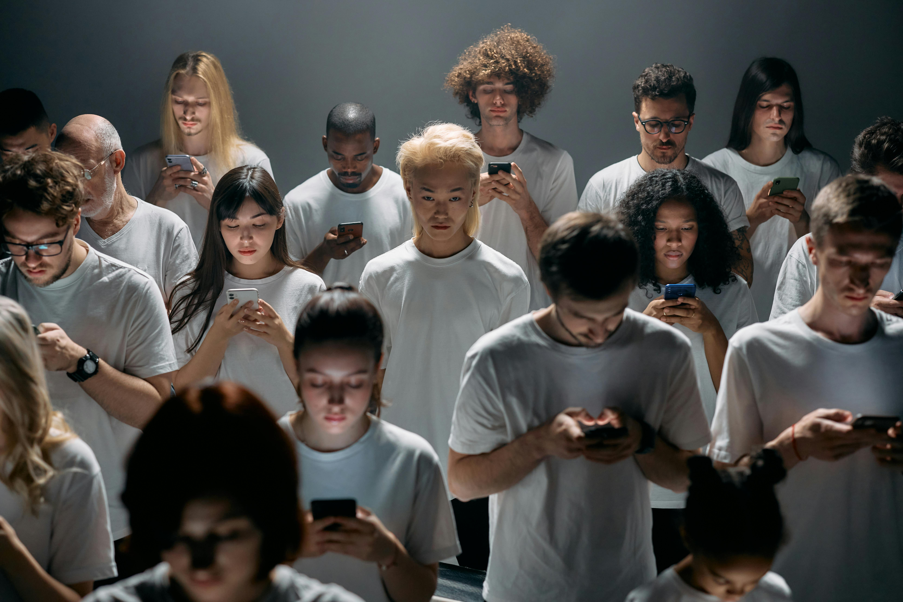
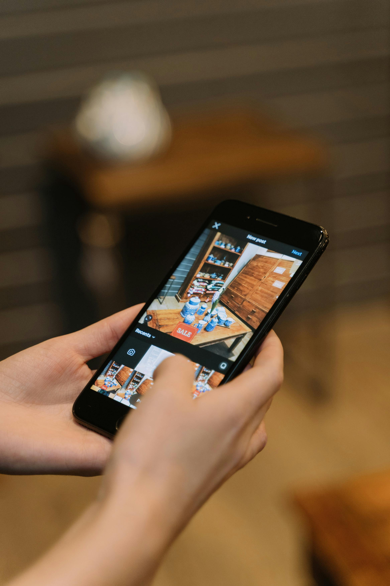
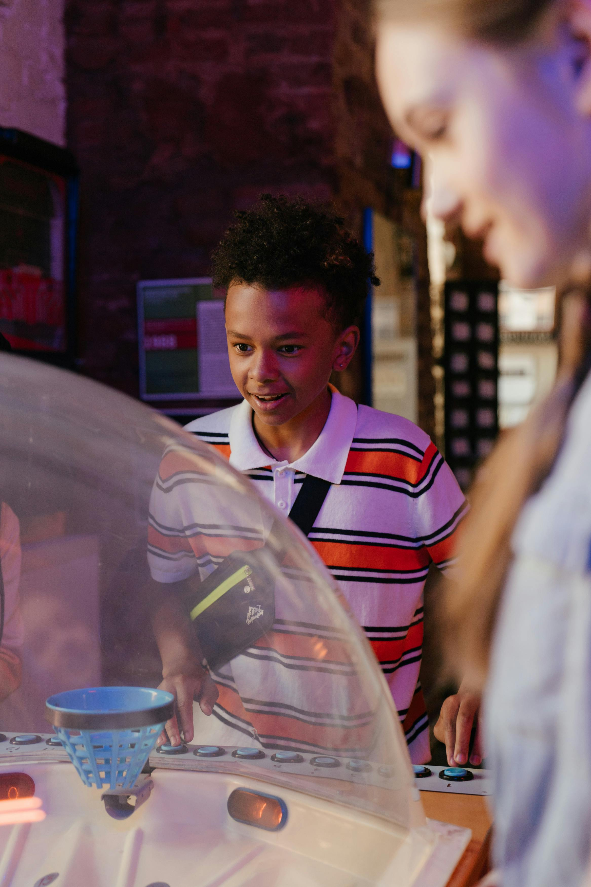
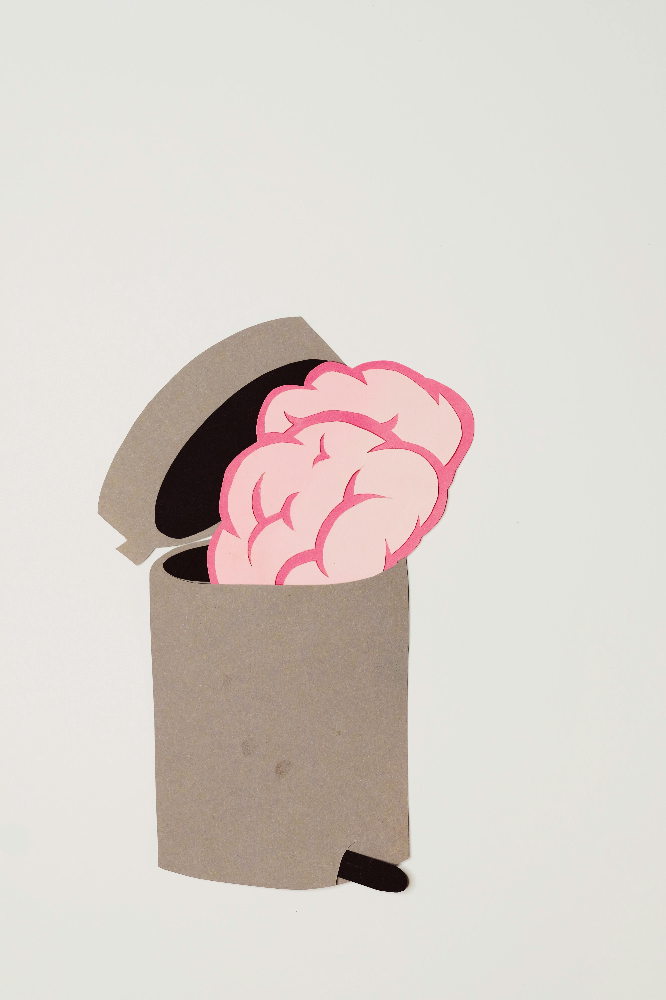
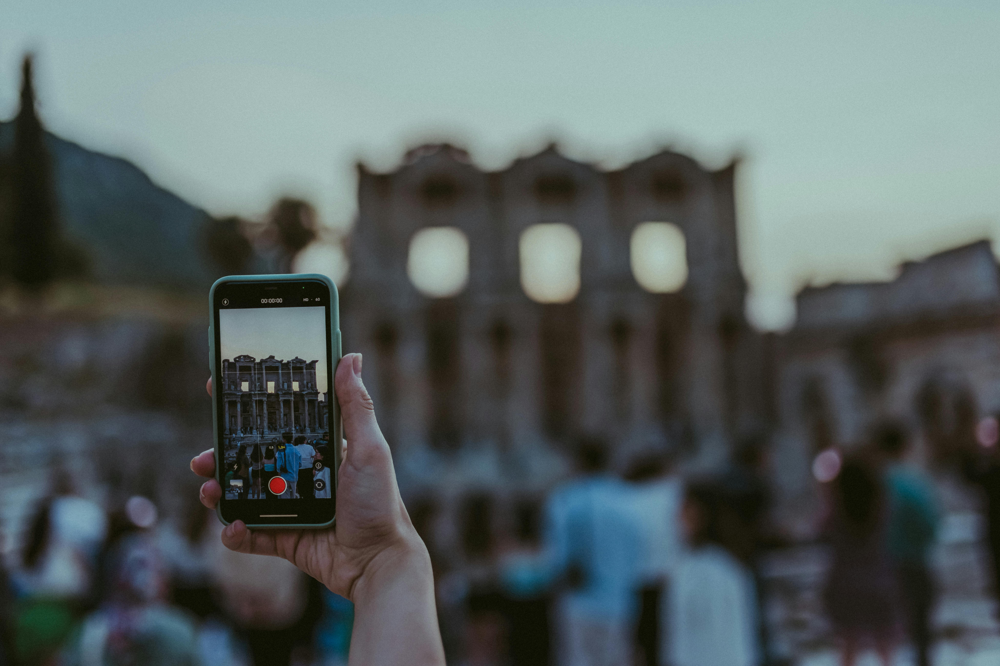
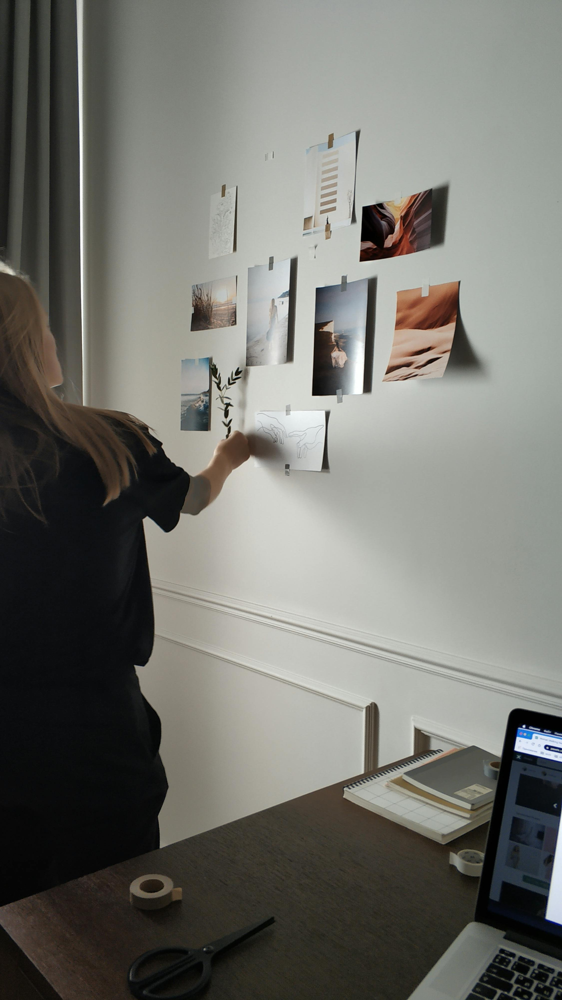

Unidad 1: Problemáticas juveniles y medios contemporáneos

Esta unidad te invita a mirar tu propia realidad con otros ojos. No desde lejos ni como algo ajeno, sino desde lo que vives cada día: tus emociones, tus relaciones, lo que ves en redes, lo que te preocupa y también lo que te define. Aquí vas a trabajar problemáticas juveniles que están presentes en la sociedad actual y que, de una u otra forma, te atraviesan.
A partir de experiencias personales, conversaciones en clase y la observación del entorno cercano, desarrollarás proyectos visuales y audiovisuales. La idea es que puedas decir algo propio, con sentido, usando imágenes, videos y recursos digitales que ya forman parte de tu vida.
¿Por qué esta unidad importa?

Vivimos rodeados de imágenes. Coleamos, miramos, compartimos. Pero pocas veces nos detenemos a pensar qué mensajes hay detrás de todo eso. Esta unidad propone justamente eso: parar un momento y preguntarse qué comunican los medios, cómo influyen en lo que pensamos y cómo nos vemos a nosotros mismos.
No se trata solo de que algo “se vea bonito”. Se trata de entender qué dice una imagen, a quién representa, a quién deja fuera y por qué genera ciertas reacciones.
Juventud, emociones y contexto

Ser joven hoy no es simple. Hay presiones, expectativas, dudas y cambios constantes. No todos viven lo mismo ni sienten igual, y eso también importa. En esta unidad se reconoce que existen muchas formas de ser joven y que cada experiencia tiene valor.
El trabajo se construye desde el respeto, el diálogo y la participación. Tu opinión cuenta. Tus vivencias también
Problemáticas que se abordarán

A lo largo de la unidad podrás trabajar temas como:
- La construcción de tu identidad personal y social
- Las emociones, la salud mental y el autocuidado
- La presión social y las expectativas externas
- El impacto de las redes sociales
- Los estereotipos sobre la juventud
- La discriminación, la inclusión y la diversidad
- Las relaciones con otras personas
Son temas complejos, a veces incómodos, y no siempre tienen respuestas claras. Justamente por eso vale la pena pensarlos con calma y desde distintas miradas.
Medios contemporáneos y mensajes

Las redes sociales, la publicidad, la fotografía y el video no solo entretienen. También transmiten ideas, modelos y formas de ver el mundo. En esta unidad analizarás cómo funcionan estos lenguajes visuales y qué efecto tienen en quienes los consumen.
¿Alguna vez te preguntaste por qué cierta imagen te genera rabia, identificación o inseguridad? Ese tipo de preguntas son parte del trabajo.
Crear para expresar

El centro de la unidad es la creación de proyectos visuales. Podrás trabajar de forma individual o en grupo, siguiendo un proceso que incluye investigar, planificar, producir y presentar. No se espera perfección, sino claridad en el mensaje y coherencia con la problemática elegida.
Se valora la expresión personal, las ideas propias y el respeto por las experiencias ajenas. Crear también es una forma de decir “esto es lo que pienso” o “esto es lo que siento”.